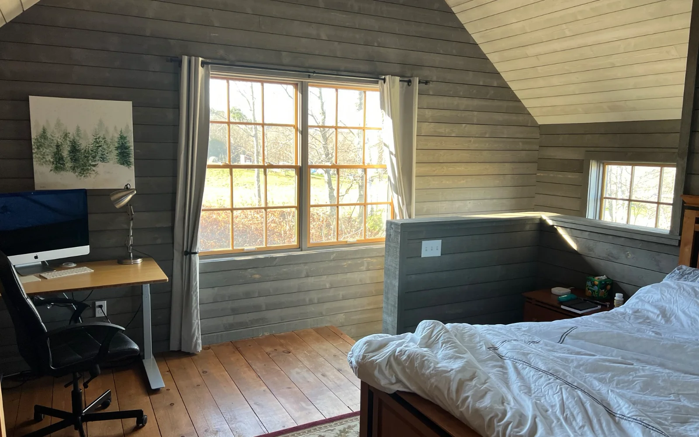
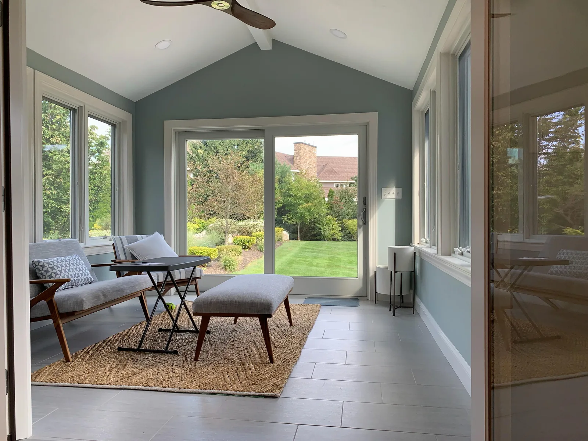

Wakefield remodeling contractors
Wakefield remodeling contractors for projects that need clear scope
DeFaria Construction helps Wakefield homeowners turn remodeling ideas into a practical plan before work begins, with direct communication around layout, finish decisions, access and project sequencing.
Local search focus
Wakefield remodeling should account for the property, not just the room.
Wakefield homes often need remodeling that respects established layouts, lake-area access, older finishes and the owner choice between targeted updates and broader interior work. The first step is narrowing the scope so the owner knows what is changing, what stays protected and which finish decisions affect the timeline.
This page supports remodeling searches around Greenwood, Montrose, Wakefield Junction, Lakeside, Downtown Wakefield, West Side. It connects the Wakefield search to service photos, related pages and a direct estimate path.
- Clear estimate conversations before the project starts.
- Direct communication with homeowners and business owners.
- Local coverage across Essex County and Middlesex County.
Wakefield is a strong bridge into Middlesex County because the search intent can be residential, lake-area, commuter-town or local storefront. The page should feel different from Woburn by speaking to established neighborhoods, Lakeside considerations, Greenwood and Montrose homeowners, and the need for clear planning before a project affects daily routines.
For Wakefield remodeling, the page should address older finishes, lived-in homes, lake-area access, protection of occupied rooms and the choice between a focused update and broader interior work that changes how the household uses the space.
Wakefield neighborhood planning note: Greenwood, Montrose, Wakefield Junction, Lakeside and Downtown Wakefield, West Side do not all create the same project conditions. A useful page should help the visitor think about access, parking, existing structure, privacy, daily use and whether the project is a targeted update or a larger scope conversation.
Residential context for Wakefield: Wakefield homes often need remodeling that respects established layouts, lake-area access, older finishes and the owner choice between targeted updates and broader interior work. A Wakefield addition should connect the new square footage to the way the home is used, especially when access, driveway layout, privacy or roofline transitions affect the plan.
Commercial and outdoor context for Wakefield: Wakefield commercial remodeling can involve offices, service spaces and local storefronts where a clear scope helps avoid disruption for staff, customers and neighboring businesses. Wakefield deck work should account for outdoor use near wooded or lake-area settings, stairs, railings, privacy and how the deck connects to the main living space.
Areas covered
A local Wakefield page should answer the search before asking for the call.
This page supports Wakefield remodeling contractors searches and related local intent. It gives visitors enough context to decide whether DeFaria Construction is relevant before they call.
- Greenwood
- Montrose
- Wakefield Junction
- Lakeside
- Downtown Wakefield
- West Side
Project photos
Remodeling photos for Wakefield homeowners
The Wakefield remodeling page uses real service photos so visitors can judge finish quality before they request an estimate.



Experience
Why this page is built for real visitors, not just keywords.
DeFaria Construction is a local construction and remodeling company serving homeowners and business owners in Massachusetts. The company records show direct owner involvement from Luiz DeFaria and BBB credibility as part of the trust stack, so the page is written around project clarity, service area fit and practical next steps instead of repeating a city name without value.
The goal is to help someone searching for Wakefield remodeling contractors understand the type of work, the local areas covered and how to start a direct conversation with the contractor before requesting an estimate.
Request an estimateFAQ
Common questions about Wakefield remodeling contractors
What remodeling work can DeFaria Construction handle in Wakefield?
DeFaria Construction can support interior remodeling, home updates, kitchen or bathroom-related finish work and broader remodeling projects where the owner needs a clear scope.
Why create a Wakefield remodeling page?
Wakefield homeowners often search by city before calling a contractor. A local page answers that intent with neighborhoods, service photos and a clearer path to an estimate.
How should a Wakefield remodeling estimate start?
A useful estimate starts with a walkthrough, project goals, finish expectations, access needs and a conversation about what should be protected during construction.